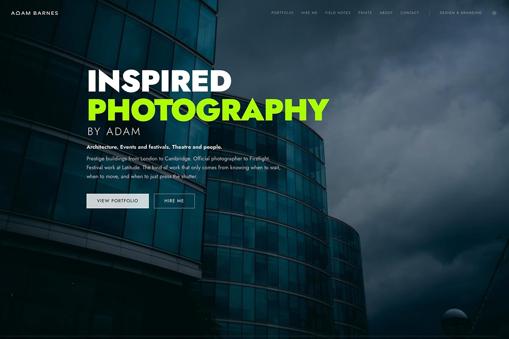
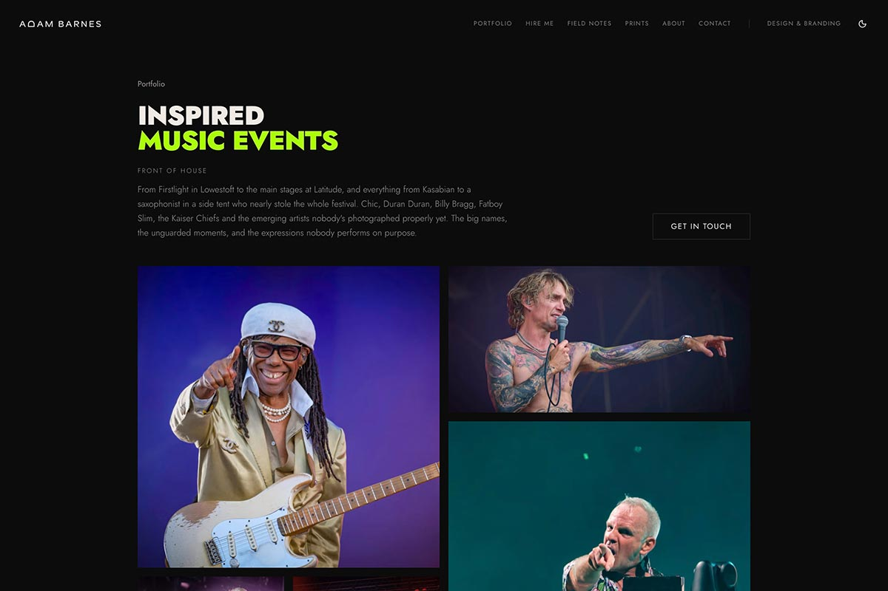

Image Heavy by Adam
Image-heavy doesn't have to mean slow. My photography portfolio is also my hardest brief: a full-screen video homepage, hundreds of high-resolution photographs, and it still has to load instantly. Built with Next.js and Sanity.
The brief
My photography portfolio is also my hardest brief. A full-screen video homepage, hundreds of high-resolution photographs across eleven portfolio categories, and it still has to load instantly.
Most page builders struggle the moment a site gets seriously visual. Every image adds weight, every plugin adds drag, and before long a beautiful portfolio takes five seconds to appear.
The approach
So when I built it, I treated it like a client project with an unreasonable brief and no patience for loading spinners.
The answer was Next.js and Sanity. Next.js handles the front end and keeps everything fast. Sanity provides a structured backend, so every photograph, caption and category lives as proper content rather than being bolted into pages. Images are served through Sanity's CDN, sized and optimised automatically for whatever screen they land on.
The result
Google Lighthouse scores the site 100 for Performance. Not 90-something. 100, with a full-screen video above the fold and a site carrying more imagery than almost any business website would ever need. It scores 100 for SEO and Best Practices too.
It works in the other direction as well. Behind the scenes, publishing a new shoot takes minutes, with none of the wrestling a traditional page builder demands.
Is this for you?
If your site is image-heavy, content-heavy, or just needs to be properly quick, this is the approach I'd recommend. See it running at adambarnesphotos.co.uk.
If you think your project might benefit from the same approach, get in touch.

